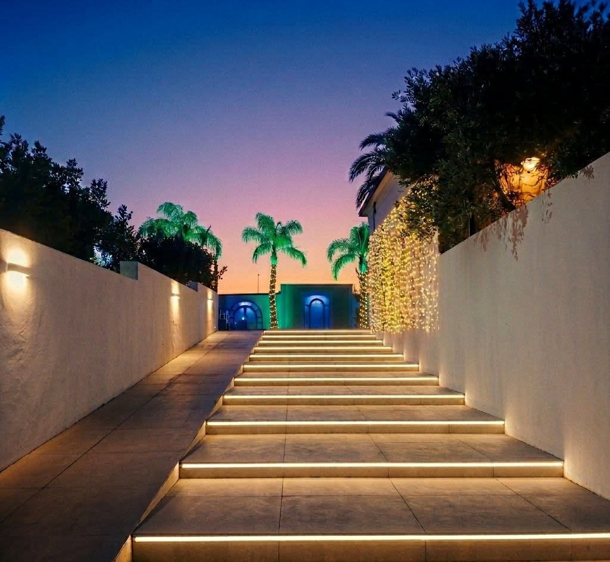
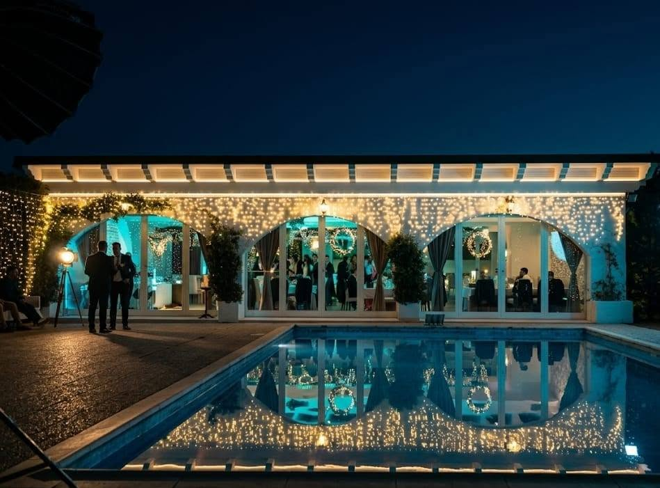
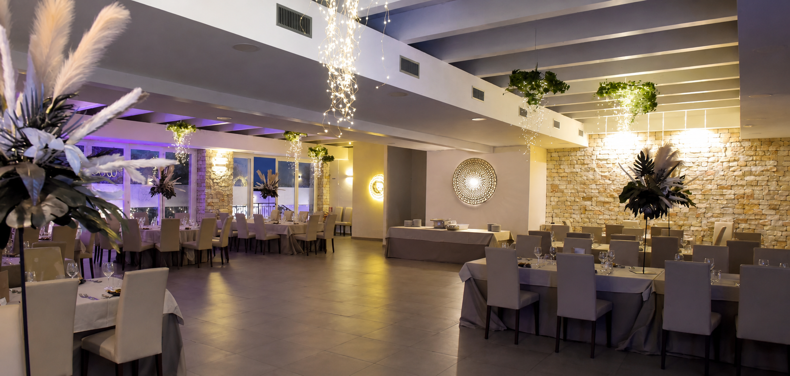

01Corte Salentina
01Corte Salentina
01
Corte Salentina
Pergola, ulivo e divani bianchi. Dove si comincia con l'aperitivo, prima di spostarsi in sala o a bordo piscina.
Restaurant & Banqueting
Sala ricevimenti a Terlizzi. Palme illuminate, piscina e corte salentina per le feste che contano.
Una tenuta di campagna alle porte di Terlizzi, pensata per un giorno intero: l'aperitivo sotto le luci, la cena in sala, la musica a bordo piscina.

01Corte Salentina
Pergola, ulivo e divani bianchi. Dove si comincia con l'aperitivo, prima di spostarsi in sala o a bordo piscina.

02Zona PiscinaPiscina, lettini a baldacchino e le arcate della sala che si specchiano nell'acqua. Cene all'aperto e serate di festa.

03SalaPareti in pietra, tavoli apparecchiati e luci sospese. Il ricevimento al coperto, qualunque sia la stagione.
Visite e feste si organizzano su prenotazione telefonica.
339 707 1801 SP 56 km 7,070 (Molfetta - Ruvo di Puglia)